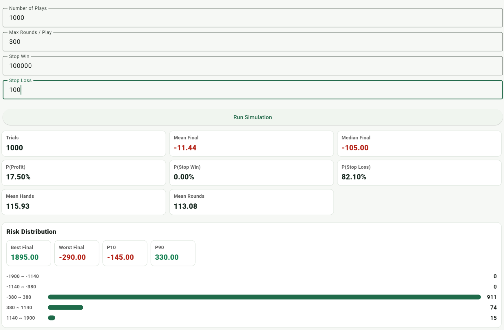

理想與現實
算牌在數學上可以建立小幅優勢，但真實環境裡還有桌規、穿透率、桌限、資金池、執行穩定度與被注意的風險。理解這些限制，比單純知道 Hi-Lo 牌值更接近現實。
算牌理論上成立，但條件很嚴格
算牌的核心不是預知下一張牌，而是利用已出現的牌來估計剩餘牌堆的結構。當低牌被發掉、剩餘牌堆高牌比例上升時，玩家在 blackjack、double、insurance 和部分 deviation 上會得到較好的條件，這時提高下注才有意義。
但這個優勢通常很小，而且需要很多前提：桌規不能太差、blackjack 最好是 3:2、穿透率不能太淺，玩家也要能穩定執行基本策略、算牌、True Count 換算和下注級距。只要其中幾個條件不理想，理論優勢就可能被吃掉。
桌規會直接影響算牌價值
不是所有 blackjack 桌都適合算牌。6:5 blackjack 會大幅降低玩家回報，H17 通常比 S17 對玩家不利，是否允許 DAS、Surrender、RSA，也會影響長期期望值。桌限也很重要，因為算牌要在高 True Count 時加大下注，如果桌限太低或 bet spread 受限制，優勢就很難放大。
如果是 CSM 連續洗牌機（Continuous Shuffling Machine），傳統算牌通常沒有太大意義。CSM 會把用過的牌持續洗回牌堆，讓已出現的牌資訊很快失效，和一般發到 cut card 才洗牌的 shoe game 不同。
穿透率決定資訊能不能累積
穿透率是指一個牌鞋發出多少比例後才重新洗牌。穿透率越深，算牌資訊越有機會累積，玩家也比較有機會等到高 True Count 的區間。
如果 cut card 放得太前面，很快就重新洗牌，算牌還沒累積出明顯訊號就被重置。算牌不是每一手都有優勢，而是要等到少數牌堆條件變好的時候才真正有下注價值。
優勢很小，下注級距會放大短期波動
電影常讓人覺得算牌可以短時間大賺，但現實不是這樣。即使一套策略在長期是正 EV，短期仍然可能大輸。Flat betting 的 blackjack 和許多賭場遊戲相比不一定是高變異數遊戲；算牌真正困難的地方，是優勢通常很小，而 bet ramp / bet spread 會在高 TC 時提高下注，讓短期盈虧波動變大。真正的結果通常需要非常多手牌才會接近期望值。
正 EV 不代表今天會贏，也不代表這個 session 會贏。它只代表在條件足夠、手數夠多、執行穩定的情況下，長期平均值可能偏向玩家。
資金池比單次輸贏更重要
算牌需要的不只是會算，而是要有足夠的本金 / 資金池（bankroll）承受波動。下注級距越大，長期 EV 可能提高，但短期波動也會變大。如果資金池太小，即使策略本身是正 EV，也可能在長期優勢發揮前就先承受不了虧損。
停損停利可以改變一次遊玩的結果分布，也比較接近真實玩家的體感，但它不會把負 EV 變成正 EV，也不會消除變異數。這也是為什麼除了看 Round Stats，還需要看 Session Stats。
App 模擬統計：停損 100 vs 停損 200
下面兩組 Session Stats 都使用 Hi-Lo、Bet Ramp 2/4/6/8/10、Base Bet 10、Max Round 300，並各跑 1000 個 Play。差別在於停損設定：一組停損 100，另一組停損 200。


結果可以看到，停損 100 的平均 Round 數較少，約 113 局，相比停損 200 的約 177 局更早結束；Stop Loss 比率也較高，約 82.1% 對 64.6%。Mean Final 也從停損 100 的 -11.44，變成停損 200 的 +4.36。
這組比較不是在說停損越大就一定比較好，而是說明資金池的重要性。如果本金太小，常常還沒等到高 True Count，或才幾局就遇到連續虧損而無法繼續，算牌的長期優勢就沒有足夠時間發揮。
算牌常常不是一個人的短期故事
很多人對算牌的印象來自電影，好像幾個晚上就能賺很多錢。但真實情況通常更接近：大量手數、團隊分工、足夠資金池、嚴格紀律和盡量減少錯誤。
團隊算牌的優勢在於可以同時觀察更多牌桌、累積更多局數，也能把資金池集中使用，降低單一玩家短期波動的壓力。電影把這些過程濃縮成短時間的劇情，所以看起來像是快速致富；但真正重要的其實是大量重複、穩定執行和少犯錯。
執行難度比數學公式更現實
實戰中要同時追蹤 Running Count、估剩餘牌副數、換算 True Count、決定下注，還要照基本策略和 deviation 做正確決策。多人牌桌、發牌速度、旁邊干擾、心理壓力和連輸時的情緒，都會讓錯誤變多。
對多數人來說，最難的不是知道 Hi-Lo 的 +1、0、-1，而是在接近實戰的節奏中穩定執行。這也是為什麼練習、回放和錯誤檢討比單純背公式更重要。
被注意與實戰限制
算牌通常不是犯罪，但賭場可以拒絕服務或限制玩家。下注幅度太明顯、只在高 True Count 時突然加大下注、長時間穩定獲利，都可能讓玩家被注意。
所以現實中的問題不是「數學上能不能最大化 EV」而已，也包括這套策略是否容易被執行、是否太明顯、是否能承受波動，以及是否符合當地法律與場地規範。
模擬有價值，但不能取代訓練
統計模擬可以幫助理解 EV、ROI、SD、bet ramp、桌規差異和 session 結果分布。但只看模擬數字，不代表真的能在牌桌上穩定執行。
對多數學習者來說，更重要的是把策略、算牌、下注、錯誤檢討和統計理解接起來。模擬回答的是「長期可能長什麼樣子」，訓練和 Replay 則回答「我實際上有沒有做對」。
這個 app 的定位
這個 app 不是把算牌包裝成穩賺方法，而是把理論和實作接起來。Decision Training 用來降低基本策略和 deviation 錯誤；Running Count / True Count Drill 用來練計算速度；Hi-Lo Count Drill 和 Game 模式用來模擬更接近實戰的發牌節奏；Replay 用來檢查下注、動作和 insurance 錯誤；Round Stats 和 Session Stats 則用來理解長期 EV、變異數、停損停利和不同策略的結果分布。
結論：算牌不是穩賺，而是高要求的小優勢遊戲
算牌的價值不是保證獲利，而是在合適桌規、足夠穿透率、合理 bet ramp、足夠資金池和穩定執行下，把原本不利的遊戲推向小幅正 EV。
真正困難的地方不是公式，而是長時間少犯錯、承受波動、控制下注、理解限制，並在現實環境中維持可執行性。學算牌不應該只看「能不能贏」，而要看自己是否真的能把整套流程穩定做出來。